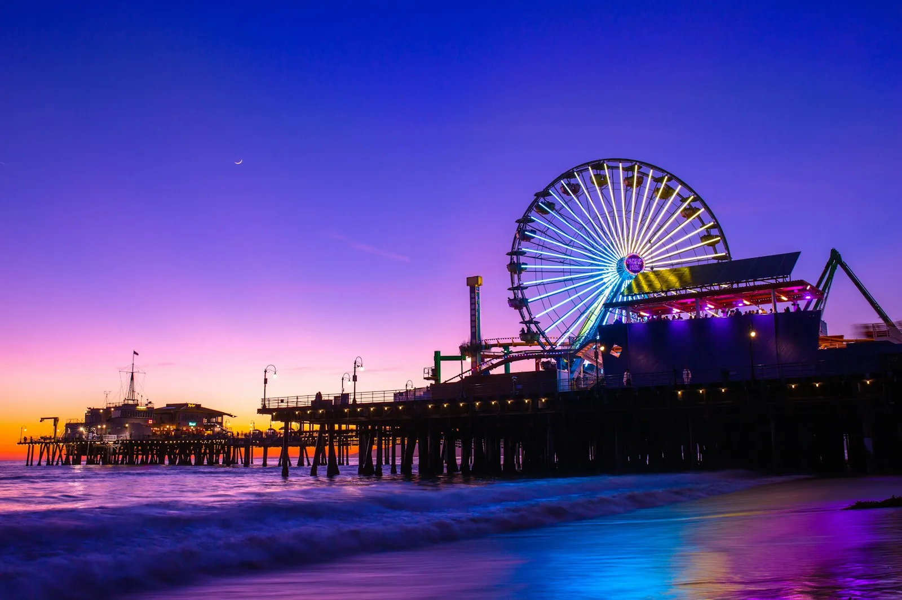
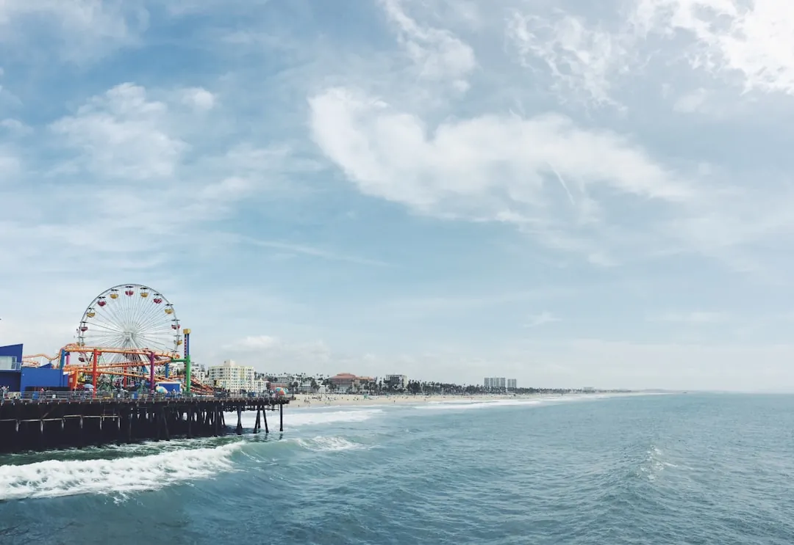

Santa Monica: Beach, Pier & Palisades
· By GoldenPath Guide Editorial Team
At the far western edge of Los Angeles, Santa Monica is the archetype of California beach culture. With sun that makes you grin wider than a mini basketball, an endless Pacific horizon, and a city that’s walkable, tasty and famously car-optional, it’s a living textbook of Southern California seaside life. The air carries that soft, grey marine layer first thing, and the Pacific sits pale and glassy until the afternoon sun finds it.
One stroll here and you understand the whole stretch of coast.
The Pier: Route 66's End & a Solar Ferris Wheel
The icon is unmistakably Santa Monica Pier. The sign marking the end of Route 66 stands here where the cross-country highway reaches the sea, and the solar-powered Ferris wheel on the pier holds the title of the world’s first. At dusk, the lights of the ocean and city merge into a scene that photographs itself. The air turns cool, and the pier’s wood creaks underfoot as the Ferris wheel starts to glow against the darkening water. Right beside it, Pacific Park is an easygoing beachfront theme park with a light touch.

A Pedestrian Downtown & Shopping
Walk up from the pier onto Third Street Promenade, a pedestrian street alive with street performers, trendy boutiques and cafés — great for a slow browse. For more, the boutiques along Montana Avenue offer a more polished take on L.A. style, and you might just spot a celebrity.
A Foodie Kind of City
For eaters, Santa Monica is generous. Its Wednesday and Saturday morning farmers market, where local chefs buy their ingredients, is counted among the best in the country. Choose your own adventure from standout restaurants led by renowned chefs — like Wolfgang Puck and Josiah Citrin — to local favorites and California fare along Rustic Canyon. Two Michelin-starred spots, Mélisse and Citrin, also call this city home.
Bikes, Culture & Easy Transit
Bike lanes wind across town, and the signature 22-mile Marvin Braude Bike Trail — known as The Strand — hugs the shore from Pacific Palisades to Torrance. With the Big Blue Bus and the Metro E Line connecting you to downtown L.A., Santa Monica is one of Southern California’s most transit-friendly places, and in 2022 it earned a sustainable-city certification.
For culture, Bergamot Station — a converted rail depot and factory — gathers more than 20 galleries, while the Broad Stage fills evenings with jazz, classical and world music.
Day on the beach, dusk on the pier, night downtown — Santa Monica delivers several flavors of delight even in a single day. Bookend a Los Angeles trip with a meal and a sunset here. Out on the sand, the breeze freshens and the gulls settle in as the sky runs from gold to a long, quiet blue.
Pier Hours, Rides and Aquarium
The Santa Monica Pier opens daily with rides running roughly 11 a.m. to 10 p.m. (later on summer weekends); the solar-powered Ferris wheel charges about $10 to $15 per ride with the ocean-view sunset slots drawing the longest lines after 5 p.m. The roller coaster runs $8 to $10 per ride, and the unlimited-ride wristband near $35 to $45 pays off at five-plus rides. Pacific Park's midweek mornings run quietest — walk-on rides before noon on Tuesdays and Wednesdays. The Heal the Bay Aquarium beneath the pier charges about $10 for adults ($5 for children) and runs touch tanks plus twice-daily shark feedings kids plan around. The historic 1922 carousel building at the pier entrance charges $2 per ride on a genuine National Historic Landmark organ. Fishing from the pier needs no license and the bait shop rents gear near $10. Skip the pier parking lot ($15 to $20 flat) — the downtown structures two blocks east charge less with the first 90 minutes often free.
Shopping, Dining and Farmers Markets
Third Street Promenade's three car-free blocks hold the chain flagships and street performers; the real shopping sits one block east on Montana Avenue (boutiques) and Main Street (surf shops, bookstores). The Wednesday and Saturday farmers' markets on Arizona Avenue (8:30 a.m. to 1:30 p.m.) rank among California's best — 70-plus growers, prepared-food stalls at $8 to $14, and chef sightings before 10 a.m. Ocean Avenue's hotel restaurants serve the splurge dinners ($40 to $70 per person with the sunset view); Main Street's taco counters, ramen rooms and salad kitchens feed two for $25 to $40. The food halls near the promenade cover groups with $12-to-$18 options per stall. Sunday brunch waits run 45 minutes after 10:30 a.m. — book or arrive at 9. The Sunday Main Street sidewalk sales (seasonal) discount surf brands 20 to 40 percent.
Bikes, Transit and Day Trips
The 22-mile Marvin Braude beach bike path runs flat from Pacific Palisades to Torrance; rentals along the pier and Ocean Avenue cost $10 to $15 an hour or $30 to $40 a day, with e-bikes near $60. The ride to Venice Beach takes 20 minutes south; Marina del Rey takes 45. Metro's E Line reaches downtown LA in 45 minutes for under $2 — the cheapest airport-area connection pairs it with the airport shuttle bus. The Big Blue Bus covers local routes at $1.25 a ride. Day trips stack easily: Malibu's Getty Villa (free, reserve parking $20 ahead) sits 20 minutes north; the Getty Center (free admission, $20 parking) sits 15 minutes northeast with reservations required weekends. Venice's Canals and Abbot Kinney take 15 minutes by bike. Skip driving to the Getty Villa on summer Saturdays — the PCH backup adds an hour; take the morning slot before 10 a.m.